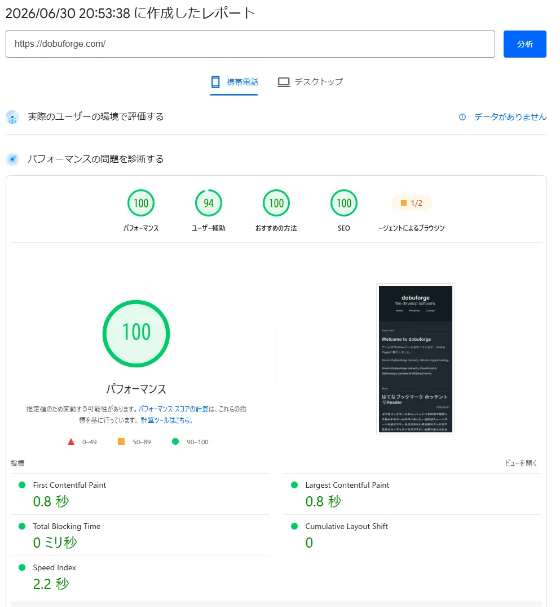

Welcome to dobuforge
ゲームやWindowsツールを作っています。GitHub Pagesに移行しました。断酒してます。
Route 53(dobuforge domain), GitHub Pages(hosting).
Route 53(dobuforge domain), CloudFront & S3(hosting), Lambda & SES(mail form).
ゲームやWindowsツールを作っています。GitHub Pagesに移行しました。断酒してます。
Route 53(dobuforge domain), GitHub Pages(hosting).
Route 53(dobuforge domain), CloudFront & S3(hosting), Lambda & SES(mail form).

誰が見ているわけでもない当サイトですが、PageSpeed Insightsでのスコアが満点ではなくなりました。頭にきたので改善しました。(多分、無駄な追記がなければ、この一度の改善で満点になっているはずです)
はてなブックマークのホッテントリをRSSで取得して表示するツールを作りました。目的はミュートワードの設定です。私は足のない爬虫類のアレが文字を見るだけでもダメなのですが、画像で表示されると寿命が3000分くらい縮むので……。.net mauiのコレクションスクロールはとてつもなく微妙でCodexさんも苦労していました。あ、今回は実験も含んでいるのでコードは1文字たりとも書いていません。READMEからRelesesでのapk配置まですべてCodexです。
https://github.com/fumakillers/HotentryReader
.net maui のコレクション上のスワイプがとてつもなく微妙でCodexさんも苦労してましたが、どうしても快適なUXにならなかったので結局Nativeで実装する方向に変えました。Java、というかそれのエコシステムに関わりたくなかったのですが、今はAndroidStudioもわりと良さげなのでそちらで作り直します。HotentryReader2を！
たいして機能も使っていないのでcloudfront & S3 & lambda & SESを全て削除。GitHub Pagesにサイトを移行した。
ゲーム制作なんですが、システム(パリィとか)は当初予定のとおりに出来ているのですが、敵のスプライトシートをチマチマ作っていて「これ一生終わんねえんじゃねえか？」と一瞬脳裏によぎった結果、めっちゃ滞ってます。今は某巨大掲示板のオレオレビューワを.Net MAUIでやったりなんだり……。
GWにやります。多分。マジで。

メトロイドヴァニア風(レベリング/経験値の概念をはじめは考えていましたが今回は見送ります)の2Dアクションエロゲを開発中です。 基本的にベースとなる絵はAI生成で、加工して素材利用しています。環境は下記になります。
Game engine: Godot 4.5.1 .NET(C#)
(Code support: Visual Studio 2022)
Graphic Edit: Affinity, Aceprite, Sprite Studio
Sound Edit: GameSynth
Godotでは特に苦戦していませんが、とにかく各キャラクターの素材(ぶっちゃけスプライト)の準備に異様に時間がかかっています。 2025年12月頭から本格的にゲーム製作始動しましたが、8割はグラフィックス素材の準備です。未だ10%も作れていないと思われます。 2026年末にはリリースできたらいいな……。